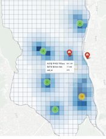
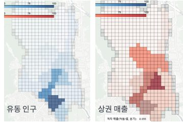
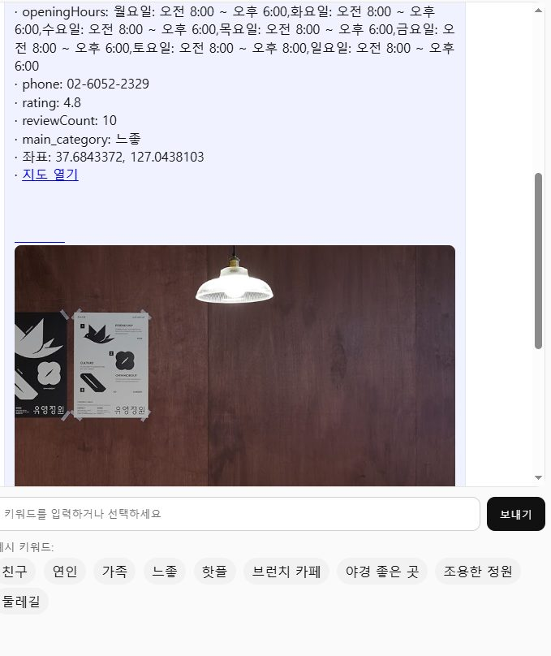
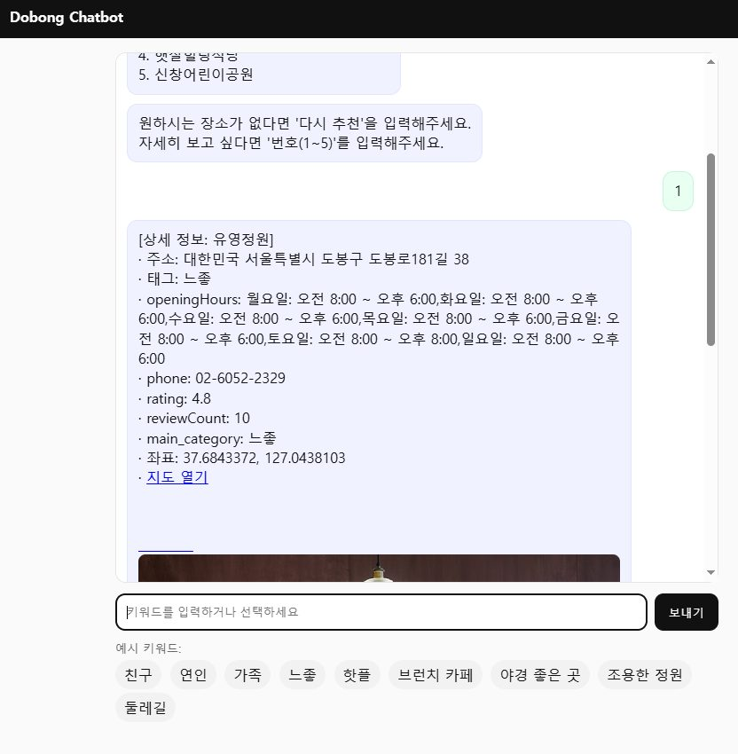

지역 접근성 지수 · 추천 챗봇
정의가 없던 '감성 공간'과 '접근성'을 수치로 만들고, 의도 기반 추천 챗봇까지 연결한 프로젝트
배경 🌱
지역 홍보에서 '접근성이 낮은 공간'이나 '분위기 좋은 곳' 같은 표현은 계속 쓰이지만 정의가 없습니다. 정의가 없으니 근거도 없고, 결국 홍보가 담당자의 감에 의존하게 됩니다.
문제 정의 🤔
숨은 명소를 발굴하려면 먼저 '접근성이 낮다'와 '분위기가 좋다'를 측정 가능한 값으로 정의해야 했습니다.
결과 화면 🖼







데이터 📦
접근 🛠
- 접근성은 Gravity Model로 계산했습니다. 지하철·상권·유동인구를 질량으로 두고, 거리는
Haversine으로 구해 거리 감쇠를 적용했습니다. - 감성 표현은
FSM 기반 태그 로직으로 규칙화해 주관적 표현을 재현 가능한 분류로 바꿨습니다. - 여러 신호를 가중 합해 하나의 점수로 통합했습니다 —
0.55×band + 0.25×kw + 0.10 + 0.05 + 0.05. - 접근성 하위 20%를 percentile 컷으로 잘라 152곳을 도출했습니다.
- 연인·가족·친구처럼 복합 의도가 섞인 질의에 대응하도록 다중 Intent 구조로 확장하고 Flask REST API로 열었습니다.
설계 결정과 근거 ⚖️
접근성 밴드에 가장 큰 비중(0.55)을 뒀다
프로젝트 목적이 숨은 명소 발굴이었기 때문입니다. 유명한 곳을 다시 추천하는 게 아니라 접근성이 낮아 덜 알려진 곳을 찾는 게 목표라, 접근성이 지배적이어야 논리가 맞습니다.
모델이 아니라 팀이 정의한 기준으로 라벨링했다
'느좋/핫플'을 감성 분석 모델로 판정하면 왜 그렇게 나왔는지 설명할 수 없습니다. 팀이 기준을 문서로 정의하고 200여 개 POI를 수작업으로 검토해 일관성을 확보했습니다.
이슈 · 고민 기록 🚩
진행하며 실제로 막혔던 지점과 그때 내린 판단입니다.
주관적인 표현을 점수로 바꾸는 기준을 만들어야 했다
'느좋', '핫플'은 사람마다 다릅니다. 그대로 두면 추천 결과를 설명할 수 없습니다. 리뷰 키워드와 장소 속성을 조합한 태그 규칙을 FSM으로 정의하고 밴드 점수와 키워드 점수를 가중 합했습니다. 완벽하진 않지만 왜 이 장소가 추천됐는지 설명할 수 있게 됐습니다.
FSM으로는 복합 의도를 못 잡았다
'연인이랑 갈 조용한 카페'처럼 대상과 장소 유형이 함께 오는 질의에서 FSM이 하나만 잡고 끝났습니다. 단일 Intent 가정이 문제였습니다. 다중 Intent 구조로 확장해 해결했습니다.
결과 📈
접근성 하위 20%에 해당하는 152곳을 도출했고, /api/recommend 기반 추천 챗봇을 완성해 분석 결과가 서비스로 이어지는 형태까지 만들었습니다.
한계 🔍
이 결과가 틀렸을 수 있는 지점입니다.
- 가중치(0.55/0.25/…)는 목적에 맞춰 논리적으로 배분한 값이고 데이터 기반 최적화는 하지 못했습니다.
- 라벨 일치도를 통계적으로 검증하지 않고 수작업 검토와 매핑테이블로 일관성만 확보했습니다.
- 20%/50% 기준은 단순 percentile 컷입니다.
금융 직무와의 연결 🎯
- 비정형 신호의 계량화 — 정의가 없던 개념을 규칙과 점수로 바꿨습니다. 대안 데이터 활용의 핵심 작업입니다.
- 설명 가능한 추천 — 모델 대신 규칙 기반으로 설계해 왜 그 결과가 나왔는지 답할 수 있게 했습니다.
- 다중 소스 결합 — 상용 API · 공공데이터 · OSM을 하나의 지표로 통합했습니다.
회고 💡
정의가 없는 대상을 다룰 때는 정의 자체가 산출물이 됩니다. 지표를 만들고 그 근거를 문서로 남기는 일이 모델링만큼 중요했습니다.